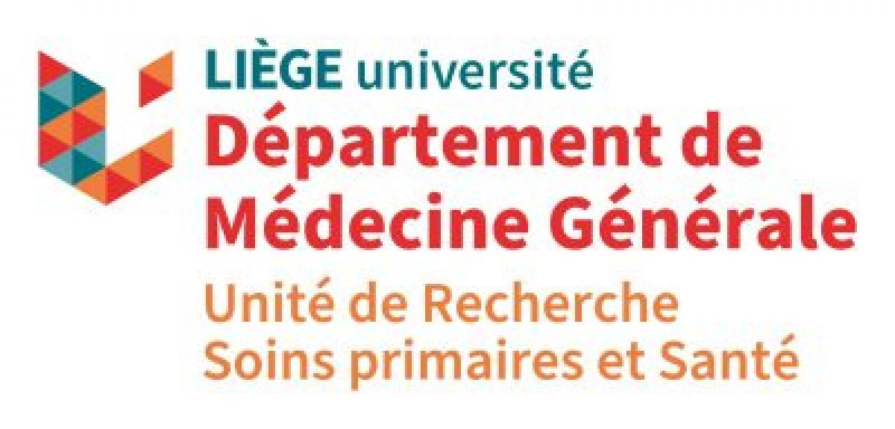
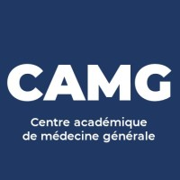
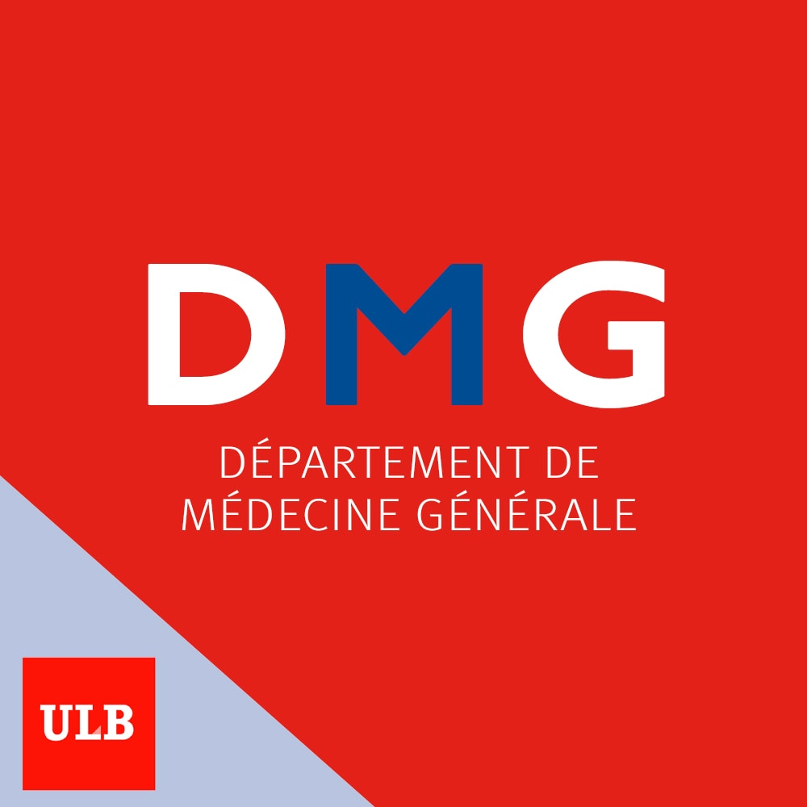

De GPS-AD studie
Betere opvolging bij langdurig gebruik van antidepressiva
De GPS-AD studie onderzoekt hoe mensen die langdurig antidepressiva gebruiken nog beter kunnen worden opgevolgd en ondersteund. Wanneer afbouwen aangewezen is, wordt onderzocht hoe dit geleidelijk en met de juiste begeleiding kan gebeuren.
De studie richt zich op mensen die antidepressiva gebruiken voor de behandeling van een depressie.
Waarom deze studie?
Veel mensen blijven antidepressiva meerdere jaren gebruiken nadat ze hersteld zijn van een depressie. Het is goed om af en toe de behandeling samen met de huisarts te bespreken.
Voor sommige mensen blijft die behandeling belangrijk. Voor anderen kan het, wanneer ze zich al langere tijd goed voelen, zinvol zijn om samen te bekijken of het antidepressivum nog nodig is.
Dat kan verschillende vragen oproepen
- Hoelang moet ik dit nog nemen?
- Is het veilig om dit jarenlang te nemen?
- Wat als mijn vroegere klachten terugkomen?
- Welke klachten kan ik krijgen tijdens het afbouwen?
- Hoe pak ik dit aan?
De GPS-AD studie onderzoekt hoe patiënten die langdurig gebruik van antidepressiva gebruiken hierin nog beter ondersteund kunnen worden door hun huisarts en apotheker.
Wie kan deelnemen?
Huisartsen kunnen patiënten uitnodigen voor de studie wanneer zij aan de onderstaande voorwaarden voldoen.
Deelname kan mogelijk zijn wanneer patiënten:
- 18 jaar of ouder zijn
- een antidepressivum gebruiken voor de behandeling van een depressie
- het antidepressivum gedurende minstens 6 maanden na een eerste depressieve episode gebruiken, of gedurende minstens 2 jaar wanneer er een hoger risico op herval bestaat
- niet meer voldoen aan de criteria voor een depressie
De huisarts bekijkt samen met de patiënt of deelname mogelijk is.
Over de GPS-AD studie
De GPS-AD is een studie die plaatsvindt in Belgische huisartsenpraktijken. De studie wordt gecoördineerd door de Universiteit Gent, in samenwerking met de zes universitaire centra voor huisartsgeneeskunde in België.
De hoofdonderzoeker is dr. Ellen Van Leeuwen (Universiteit Gent), de co-hoofdonderzoekers zijn Kristien Coteur (Universiteit Maastricht) en Gilles Henrard (L'Université de Liège). De coördinatie van de Franstalige centra gebeurt door Marina Di Gregorio (L'Université de Liège).
De studie wordt gefinancierd door het Federaal Kenniscentrum voor de Gezondheidszorg (KCE).


